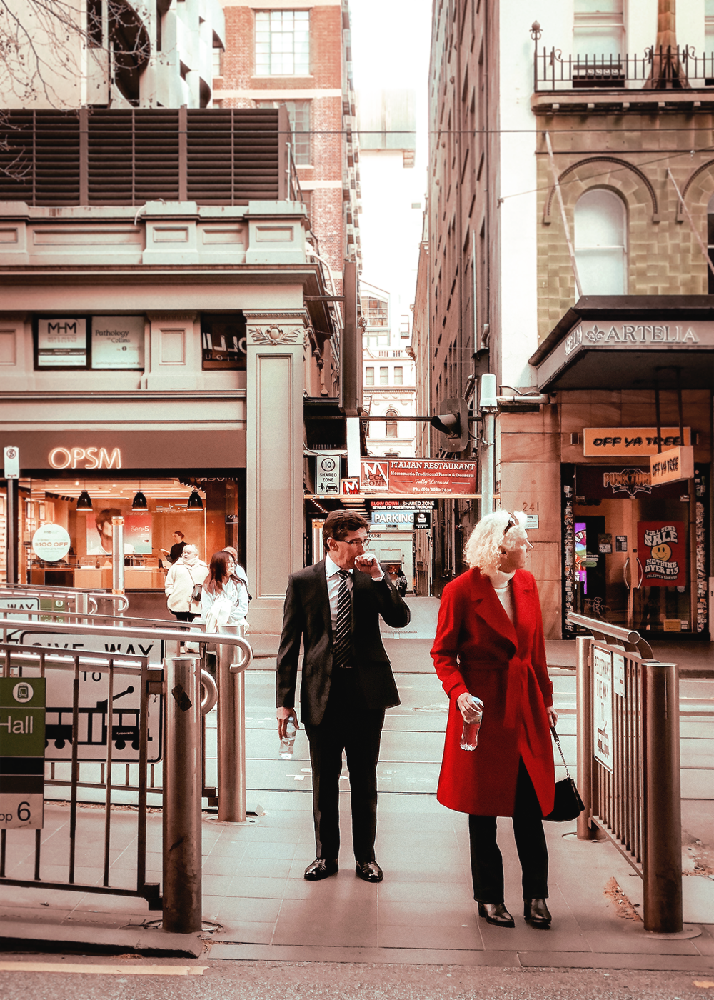
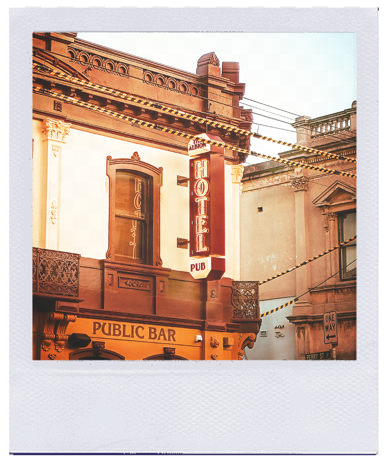

if you find this, screenshot your layout :P


Gertrude St., Collingwood

Little Bourke St.,CBD
The Public Purse, Bourke Street Mall, CBD

Lucy Loves Charlie Flowers, Hawthorn

The Lawson Grove Shop, South Yarra
General Post Office, Melbourne

Collins Street, Melbourne
Unknown Alley, Fitzroy

The Brunswick Laundromat, Brunswick
If you don't like
the weather,
just wait
five minutes...

From Melbourne,
with Love
This is a digital scrapbook of images I took across Melbourne and the
inner suburbs in
2024 and 2025. Although the subjects may look
ordinary, to me they encapsulate
the beautiful yet subtle charms of everyday life in the city.
CREATED BY AMELIA SIEW
